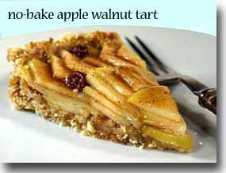

World's Healthiest Foods
No-Bake Apple Walnut Tart

No-bake apple walnut tart
30 Min - Prep & Cook Time
60 Min - Chilling Time
90 Min - Total
8 Servings
INGREDIENTS
- 2-1/2 cups walnuts
- 1-1/2 cups dates (Medjool dates work well)
- sea salt to taste
- 3 green apples, such as Granny Smith, sliced
juice of 1 lemon in 2 cups water
- 1/4 tsp cinnamon
- 1/2 tsp allspice
- 1/8 tsp ground clove
- 2 TBS honey
- 1/2 cup apple juice
- 1/4 cup raisins
DIRECTIONS
- Combine walnuts and dates in food processor. Make sure you remove pits if dates have them and cut off end where stem was. Process until well mixed and ground, but not smooth (about 40 seconds). It should be a coarse texture when done. Press evenly into a 9-inch tart pan. Set in refrigerator while making the filling.
- Slice apples by cutting into quarters. Cut out core and slice crosswise in 1/4 inch thick slices. Put into lemon water while you finish cutting apples. Drain well in colander when done.
- Place apples in a large skillet with rest of the ingredients and cook for about 10 minutes, stirring frequently on medium heat.
- Remove apples with a slotted spoon from hot pan to a bowl and cool completely.
- Reduce liquid to about half the volume and then cool.
- Spread apples evenly over crust. Brush apple-juice syrup over apples. The tart can be served right away or it will keep in refrigerator until needed. Keep tart covered in refrigerator so it doesn't pick up moisture. Top with a little vanilla yogurt if desired.